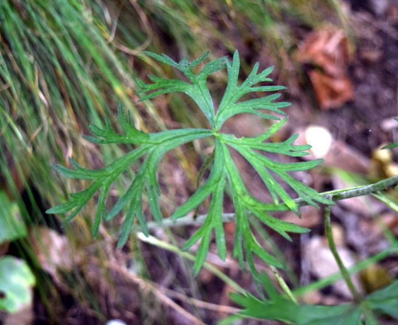

백부자

주요특징 및 설명
종명: 백부자(白附子)
학명: Aconitum koreanum
생물학적 분류: 미나리아재비과
분포: 한국(충북 이북)·중국·우수리강
등급: 멸종위기종 Ⅱ급
높이: 약 1m
주요 특징
백부자는 ‘노랑돌쩌귀’라고도 불리는 여려해살이풀이다.
뿌리에 강한 독이 있어 한방에서 진통제로 사용한다.
꽃은 7∼8월에 피고 연한 노란색 또는 노란색 바탕에 자줏빛을 띈다.